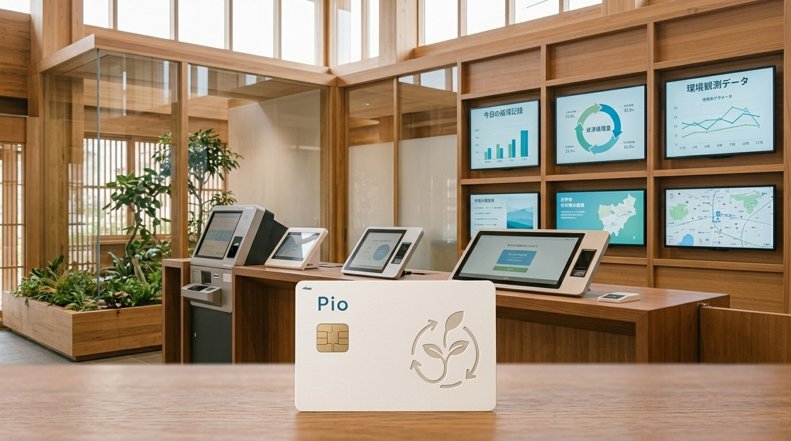

ピコぬ市では、市民一人ひとりの環境活動を記録する「Pioカード」を導入しています。名称の「Pio」は、 ピコぬ市の「ピコ」と、小さな一歩を積み重ねるという考え方に由来しています。
記録される内容
- ネオ堆肥ボックス利用記録
- 市民農園利用記録
- 緑化活動記録
- 資源循環への参加記録
- 環境観測への協力記録
Pioカードは、環境活動の成果を競うためのカードではありません。誰かと比べるのではなく、ご自身の暮らしが街の循環とどのようにつながったかを記録するカードです。
記録の例
2026年7月
資源循環記録
家庭からの有機資源循環量 2.8kg
堆肥化協力度 登録済み
お預かりした資源は、市民農園の土づくりに活用されました。
堆肥化協力度 登録済み
お預かりした資源は、市民農園の土づくりに活用されました。
カードの発行
| 発行窓口 | 市役所2階 暮らしと循環推進課 |
|---|---|
| 発行費用 | 無料 |
| 対象 | 市内在住の方 |
| 必要なもの | 本人確認書類 |
個人情報の取り扱い
記録された内容は、法令等に基づく場合を除き、ご本人の同意なく他部署へ共有することはありません。記録は、ご本人の暮らしの記録として適切に管理します。